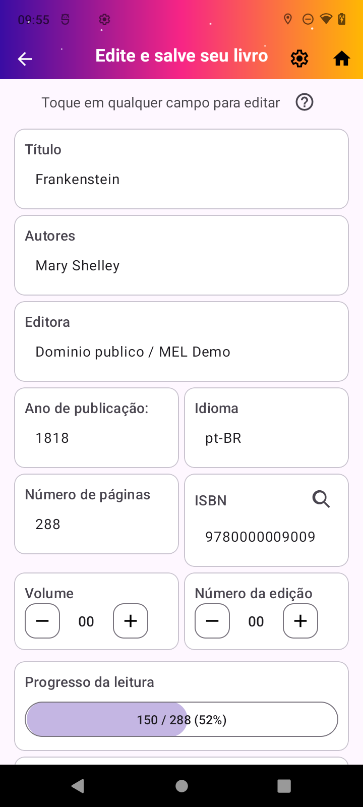

Adicione com menos digitação
Escaneie um ISBN, pesquise por título ou cadastre manualmente. Antes de salvar, você pode revisar capa, autores, editora, edição, descrição e outros dados.
- Leitura de código de barras
- Pesquisa local e na web
- Edição completa dos metadados
